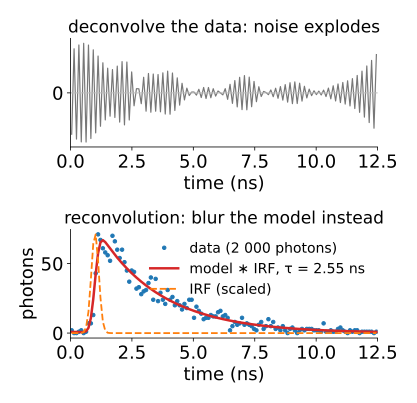
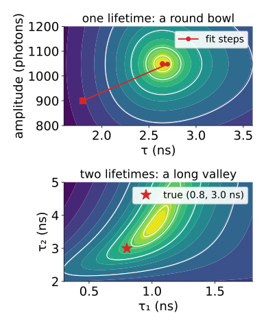
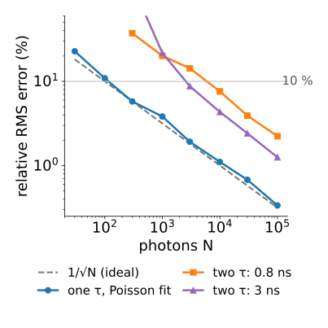
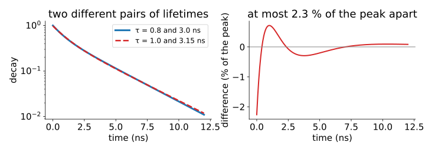
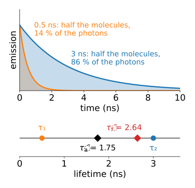
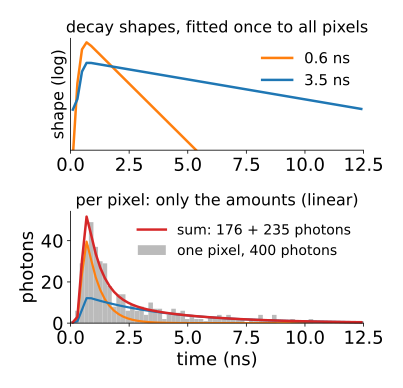
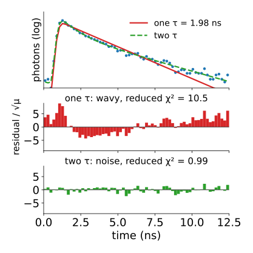

Last unit: a pixel’s photons form a histogram, the true decay convolved with the IRF, with Poisson noise. Often there are only 100 to 1 000 photons, spread over 64 to 256 bins, so many bins hold 0, 1 or 2 counts. The quick estimates used them badly. Today we fit τ (or τ₁, τ₂ and their fractions) and say how sure we are.
Fit the model through the forward model (reconvolution), never the deconvolved data.
Nonlinear fitting in words: start, linearise, step, repeat.
Which cost: least squares, χ² with data weights, or the Poisson likelihood.
How many photons does a lifetime need? About 1/\sqrt N relative error for one lifetime, far worse for two.
Global analysis: lifetimes shared by all pixels, amplitudes per pixel: unmixing in time.
Slides titled The math give the formulas and proofs; the ideas are complete without them.
Do not deconvolve the IRF out of the histogram: dividing by the transfer function amplifies noise (ill-posed problems).
Instead, reconvolution: take a candidate decay, convolve it with the measured IRF, add background, and compare with the data. Change the parameters until the model matches.
The blur is applied to the noise-free model, where it is harmless.
The IRF is measured once (a scattering sample) and used for every pixel.
A shortcut, the tail fit (fit only after the peak, ignore the IRF), throws away the photons near the peak, where most of them are, and still needs the window to start late enough.

Nonlinear fitting in words
τ sits inside an exponential: no formula gives it directly. So we search.
Start from a guess: the mean arrival time of the last unit.
Linearise: near the guess, the model changes almost linearly with each parameter.
Step: solve that linear least-squares problem for the best small change.
Repeat until nothing improves. If a step makes things worse, take a shorter, more cautious step (the Levenberg–Marquardt recipe).
Picture the cost as a landscape over (τ, amplitude): for one lifetime a single round bowl; for two lifetimes a long curved valley, where many parameter sets are almost equally good.

The math: Gauss–Newton and Levenberg–Marquardt
Model \mu(\theta) (one value per bin), data y, weights W = \mathrm{diag}(w_j), cost \sum_j w_j (y_j - \mu_j)^2. Linearise \mu(\theta + \delta) \approx \mu(\theta) + J\delta with the Jacobian J_{jk} = \partial\mu_j/\partial\theta_k:
\big(J^\top W J + \lambda\,\mathrm{diag}(J^\top W J)\big)\,\delta = J^\top W\,(y - \mu).
\lambda = 0: Gauss–Newton (one linear least-squares solve per step). Large \lambda: a short step downhill. λ shrinks after a successful step and grows after a failed one.
At the optimum, the parameter covariance is \approx (J^\top W J)^{-1} (scaled by the residual variance for plain least squares).
Two near lifetimes make two columns of J almost parallel: J^\top W J is badly conditioned (recall least-squares unmixing).
Which cost?
Least squares treats a bin with 2 counts as just as reliable as one with 2 000. But Poisson noise grows with the count: the big bins get too much say.
χ² with data weights1/y_j (the classic choice): each bin weighted by one over its own count. Bins with 0 or 1 count get huge weight (or must be patched), and a bin that happened to come out low gets more weight than one that came out high: the fit is pulled down into the tail.
Poisson likelihood: “which parameters make the observed counts most probable?” It uses the counts as what they are, including zeros. The same likelihood as Richardson–Lucy, now with three parameters instead of a whole image.
With thousands of photons per pixel all three agree. With hundreds they do not. The demo measures the bias and the spread rather than us claiming them.
Its gradient is -2\sum_j \frac{y_j - \mu_j}{\mu_j}\,\frac{\partial\mu_j}{\partial\theta}: the Gauss–Newton step above with weights w_j = 1/\mu_j, re-evaluated every step (iteratively reweighted least squares).
Compare Neyman’s \sum (y_j - \mu_j)^2/y_j (weights from the data) and Pearson’s \sum (y_j - \mu_j)^2/\mu_j (weights from the model).
Try it: fit a decay
How many photons?
For one lifetime with an ideal instrument, the best possible relative error is about
100 photons → 10 %, 10 000 → 1 %. No estimator can do better on average (the Cramér–Rao bound, math slide).
Real instruments do a bit worse: an IRF, a finite window, background. The ratio to the ideal is the instrument’s F-value, F = (\sigma_\tau/\tau)\sqrt N \ge 1.
Binning pixels (summing their histograms) is the main practical lever: 3 × 3 binning gives 9 times the photons, 3 times the precision, at a third of the resolution (recall denoising).

The math: the best one can do
One lifetime, no IRF, an infinite window, arrival times t_1, \dots, t_N (density \tau^{-1}e^{-t/\tau}):
The maximum-likelihood estimate is the mean arrival time. Its variance is \tau^2/N (the variance of one arrival time is \tau^2).
Fisher informationI(\tau) = -E[\ell''(\tau)] = N/\tau^2. Cramér–Rao: any unbiased estimator has \operatorname{Var}\hat\tau \ge 1/I(\tau) = \tau^2/N.
So \sigma_\tau/\tau \ge 1/\sqrt N, i.e. F \ge 1. With an IRF, a window and background, F > 1.
Try it: the photon budget
Two lifetimes: the long valley

Sums of exponentials are badly conditioned: lifetimes 0.8 and 3.0 ns, or 1.0 and 3.15 ns with other amplitudes, give curves at most 2.3 % of the peak apart. With 1 000 photons the noise in the peak bin alone is about 10 %.
So fits of two lifetimes need tens of thousands of photons, and lifetimes within a factor of about 2 are hard to separate at all.
In the demos: for 10 % precision, one lifetime needs about 100 photons, two lifetimes (0.8 and 3 ns) between 3 000 and 10 000.
Reporting two lifetimes as one number
With amplitude fractions \alpha_i (how many molecules) and photon fractions f_i (how many photons; a long-lived species emits more photons per molecule, f_i \propto \alpha_i\tau_i):
amplitude-weighted mean \bar\tau_a = \sum\alpha_i\tau_i: follows quenching of the whole population;
intensity-weighted mean \bar\tau_f = \sum f_i\tau_i: what the mean arrival time reports.
Example: α = (0.5, 0.5), τ = (0.5, 3) ns: \bar\tau_a = 1.75 ns, photon fractions (0.14, 0.86), \bar\tau_f = 2.64 ns. They differ by 50 %: always say which. A one-exponential fit lands somewhere in between, depending on the cost and the window.

Global analysis: unmixing in time
In a cell the same few species appear in every pixel, only in different amounts.
Fit the lifetimes once, to the summed decay of the whole image (or a region): millions of photons.
Then every pixel’s amplitudes are a linear problem: the decay shapes (convolved with the IRF) are the columns of a matrix, the time bins are the channels. This is least-squares unmixing with time bins instead of wavelength bins; non-negative least squares (endmembers) keeps the amounts ≥ 0.
A few hundred photons per pixel suffice, because the hard, nonlinear part used the photons of all pixels.

The math: variable projection
Model for pixel p: \mu_p = B(\boldsymbol\tau)\,\mathbf a_p + b, with B the n_\text{bins} \times K matrix of IRF-convolved unit decays.
For fixed lifetimes, the best amplitudes are a linear least-squares (or NNLS) solution: \mathbf a_p = (B^\top W B)^{-1}B^\top W(\mathbf y_p - b).
Substitute them back: the cost depends on \boldsymbol\tau alone. Minimise over the few lifetimes only (“variable projection”; the demo’s landscape for two lifetimes profiles the amplitudes out in exactly this way).
Mixture view: a bi-exponential arrival-time density is a two-component mixture of exponential distributions; EM (Gaussian mixtures) would fit it photon by photon.
Try it: global analysis of an image
Checking a fit
Residuals, each divided by \sqrt{\mu_j}, should look like noise: no structure, about ±1.
A wavy residual (positive at the start, negative in the middle, positive in the tail) means a missing component: the model has one lifetime, the data two (the residual map of unmixing, in time).
Reduced χ² (Pearson’s sum over the degrees of freedom) near 1: the model explains the data up to Poisson noise. Far above 1: something is missing (a component, the background, the IRF).
Learned estimators (a network trained on simulated decays) are fast; they inherit the photon limit, and the biases of their training data (neural networks day).

Summary
Fit through the forward model: convolve the model with the IRF, never deconvolve the data.
Nonlinear fitting: start, linearise, step, repeat (Levenberg–Marquardt). One lifetime: a bowl; two: a long valley.
With few photons, the Poisson likelihood is the right cost; χ² with 1/y weights is biased low.
Precision: at best 1/\sqrt N for one lifetime; two lifetimes need roughly 50 to 100 times more photons. Bin pixels to gain photons.
Say whether a mean lifetime is amplitude- or intensity-weighted.
Global analysis: lifetimes from all pixels, amplitudes per pixel by linear unmixing in time.